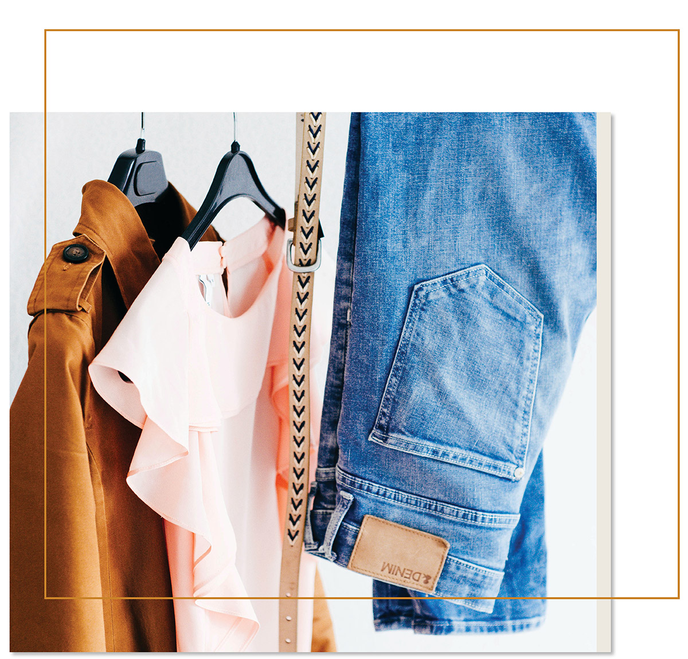
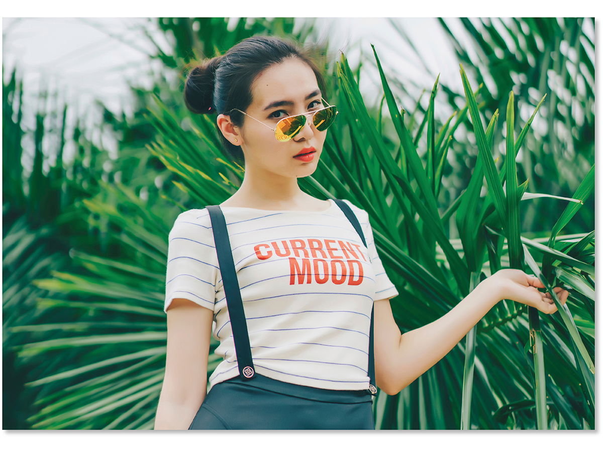
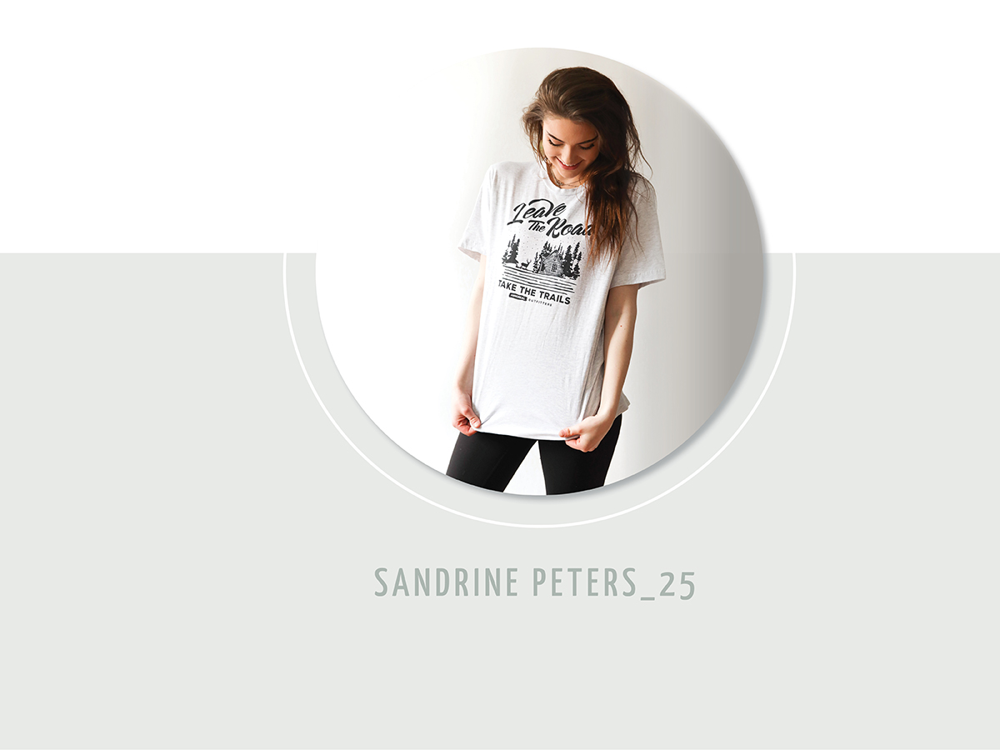
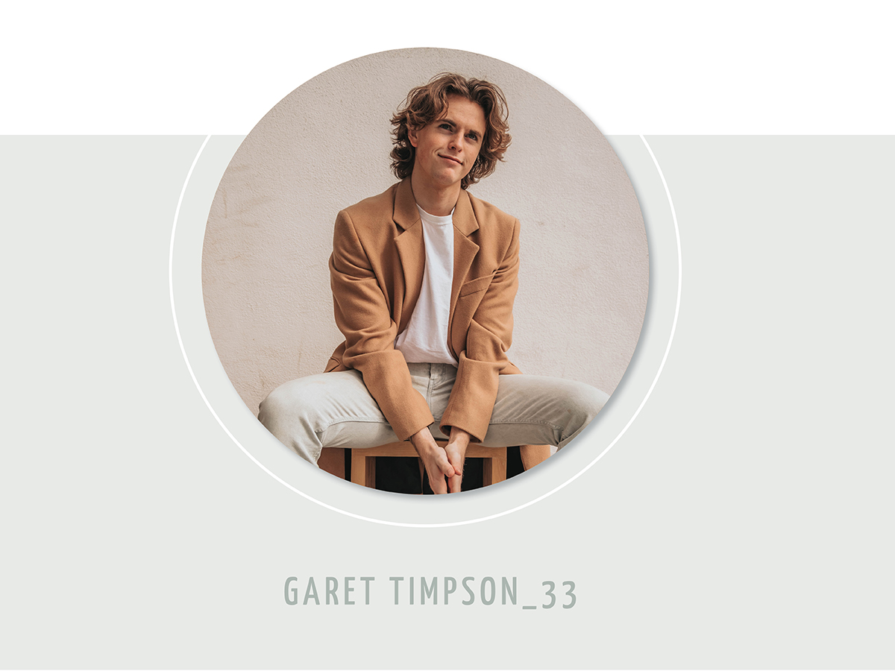
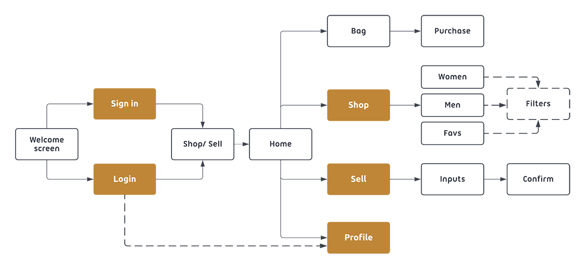
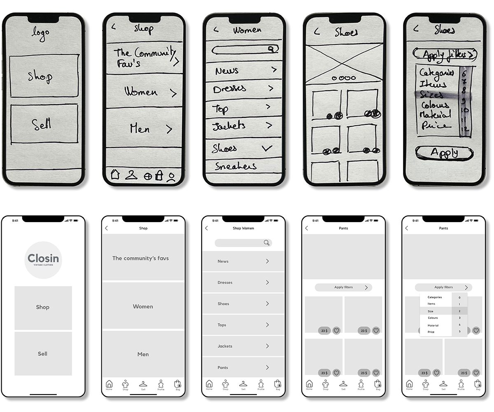
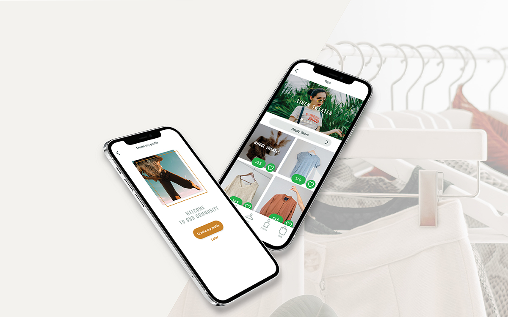
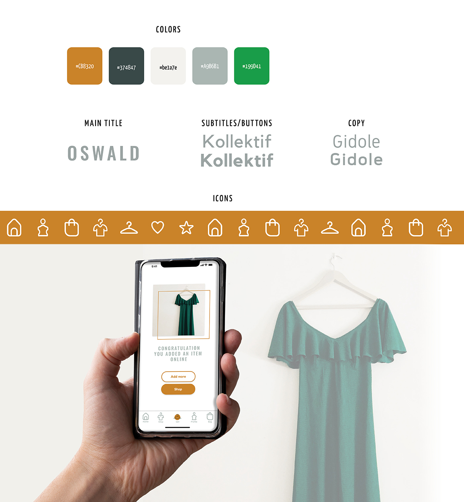

To design the UI for the mobile version of a vintage clothing
sales app and prepare for handover to developers.
Problem
We are living in a world where resources are saturated by our
consumption. We need to find solutions to protect our planet and
thinking about futur generations.
Solution
Show how buy and sell second hand clothes are easy and qualitative
as to buy new ones on commercial online stores.

THE 5W’S
The answers to these six questions reveals the context of use – the
people, their tasks, their tools and technology, and the environment in
which they will be using the product you’re designing.
Who
The target audience is primarily 25 to 34 year olds who want to buy
and sell vintage clothing online. The audience is concerned about
ecology and shopping online.
What
Closin is a modern second hand store app.
Why
Get an attractive, trendy, and qualitative interface by its
organization, clarity, and friendly interface.
Where
Usually people use the app at home to sell their product. Concerning
the purchase people can be connected anywhere at anytime they look
for a specific item.

When
When people need an item to buy or sell, they will connect to the
app. Also, the users will be connected to “Closin” when they will
receive notifications to share new adding onto the store.
How
The tone of voice is friendly, it helps peolple to making decision
to choose second hand instead off new industrial clothes. The
quality and requirement are on the same level as a normal online
store.
COMPETITIVE ANALYSIS
Under the competitive researches, I analysed two famous main apps on the
canadian market, which are GEM and True Vintage.
(+) & (-) points
The home page do not point the user throught specific products, plus
missing menu bar at the bottom helping users to navigate. We don’t
know where to start if we just want to browse. Research filter is
clear and easy to find on the product page. Prices standout on each
items which help to take decision. No possibility to select the item
(as a pre-selection) and come back on it later on the app.
Opportunities
Give the chance to users to like items (directly on the picture).
Direct the users with actions to do after they log into the app.
PERSONAS
The target user is to anyone between the ages of 24-35 of any gender.

Background
Sandrine loves clothes and changes them each seasons. But year by
year it’s the same problem, the wardrobe becomes busy, and Sandrine
can not organize it correctly.
Need
Find an easy way to keep only clothes that will be wear for the season.
Pain Points
Sandrine doesn’t know how she can empty the excess part of her wardrobe easily without lossing money.
WEAR CLOTHES THAT MATTER

Background
Garet appreciates wearing fine clothes. He loves unicity and
purchase original items under the web. For two years, Garet is more
concerned about environmental conditions. Changing its comsumption
habits matter to him.
Need
Finding a place to exchange clothes against other ones.
Pain Points
Find the rarely items unknow by his stakeholder.
USER FLOW
Before designing hight quality screens I sketched flows concerning each
features. Below, wireframes describe a purchase experienced by users in
low and mid fidelity wireframes.

WIREFRAMES
After a specific study of the need and pain points from the audience, I
defined key functionalities which are : Create a profile/ Upload items
to sell/ Leave review for other sellers/ Browse by categories (filters)/
Highlight a cool article under each category/ Create a popup newsletter
(to inform and teach)

CARE FOR YOUR CLOTHES, LIKE THE GOOD FRIENDS THEY ARE.

STYLE GUIDE
The brand guide values refl ect trendyness, eco-friendlyness,
simplicity, and professionalism.

FINAL SCREENS
Shop by section
The app offer the possibilities to refine research items by adding
filters.
Note your favorite sellers
Know more about the sellers. Discover more items from them and subscribe
to their account.